A read-only list (NIFTY FMCG stocks), no broker (last close), the Screen flag on. Made-up prices. Measured from the watchlist's own top to the first symbol row (e2e/terminal-v2.e2e.ts, "the watchlist panel's compact header").
| Width | Before | After |
|---|---|---|
| 1440 desktop | 396 px | 177 px |
| 1024 desktop (panel about 150 px wide) | 434 px | 370 px |
| 390 phone | 384 px | 201 px |
| 360 phone | 384 px | 201 px |
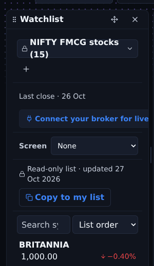
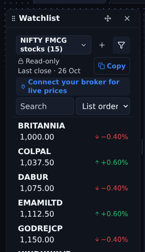
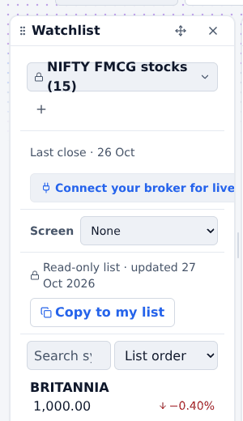
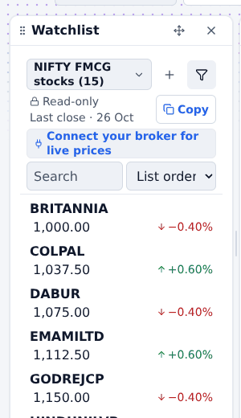
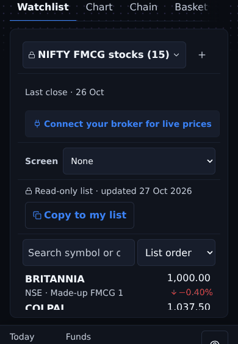
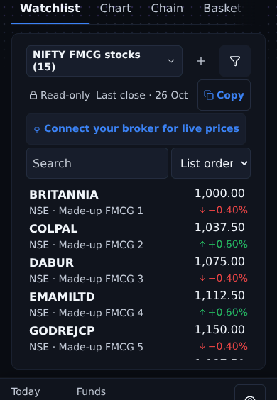
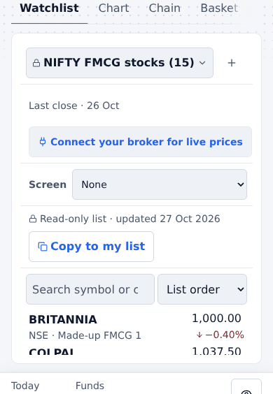
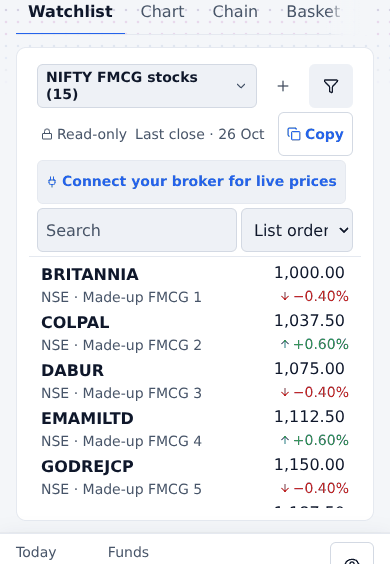
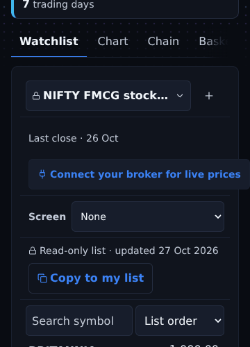
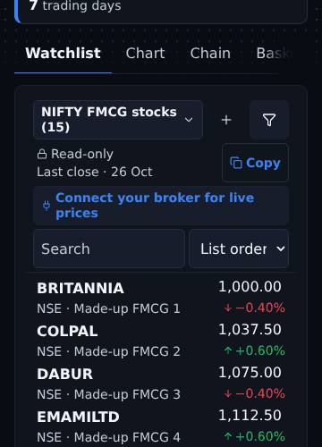
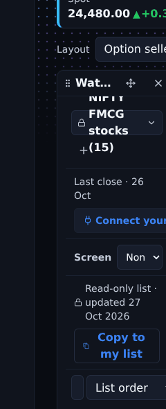
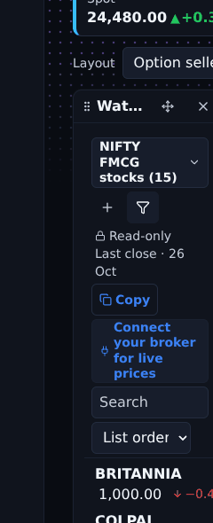